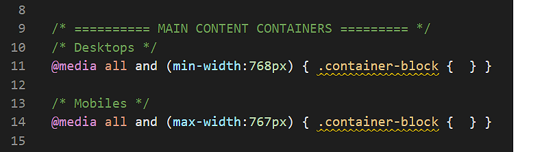
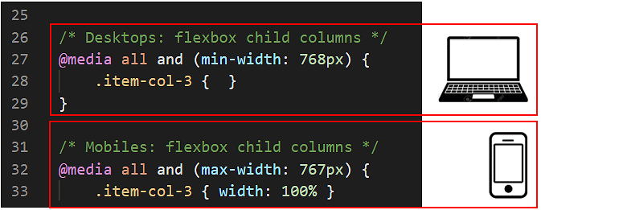
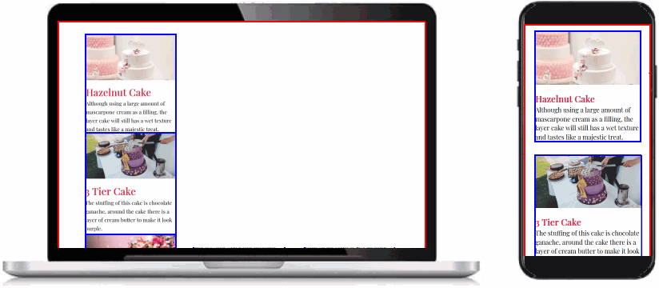
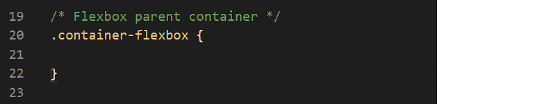
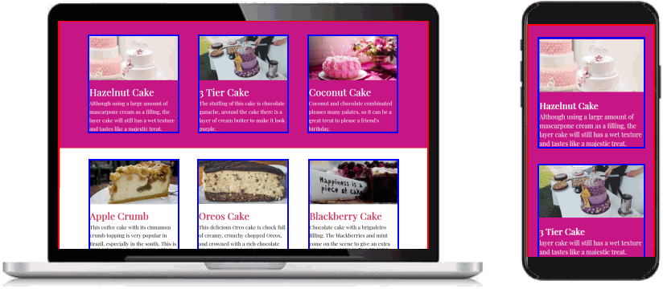
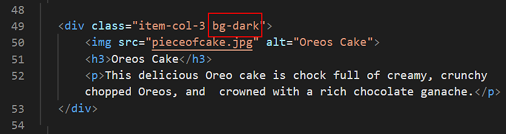
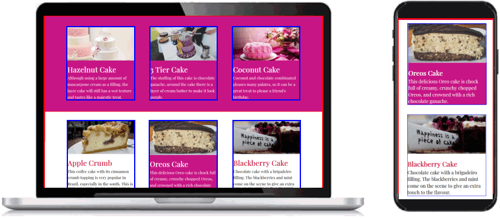
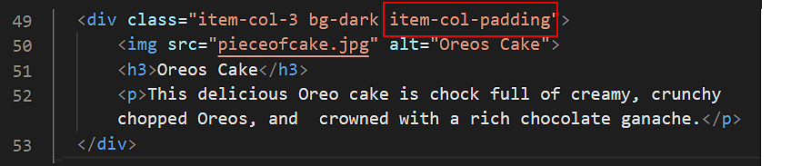
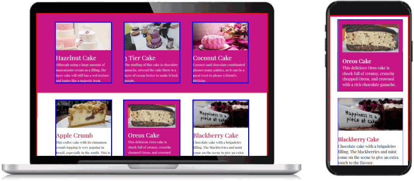
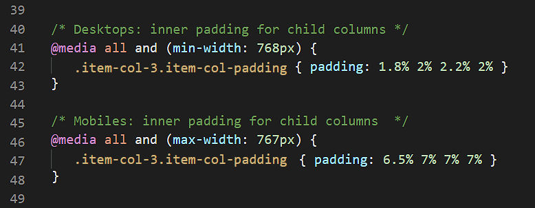

Learning Goals
At the end of this Tutorial you will be able to:
- Create and style responsive three-column layouts using CSS flexbox, with fluid text, images and coloured backgrounds.
You can view a finished version of the sample three-column web page you style in this Tutorial by clicking the link below. The finished sample page will open in a new tab of your web browser.
Working with the three-column web page
In this Tutorial, you will work with the sample three-column web page, the sample three-column stylesheet and six of the image files you downloaded in the previous CSS Flexbox: Two Column Layouts Tutorial.
- In Visual Studio Code, open the following two files:
flex-three-columns.html
flex-three-columns.css
- Display the flex-three-columns.html web page in your browser. You can see that:
- Coloured borders have been added to highlight the edges of the parent elements (in red) and the child elements (in blue).
- All the content is positioned directly against the edges of the browser window.
That is because no padding (inside spacing) has been added to the container-block parent container elements.
- All the content is 100% wide, left-to-right, across the browser window.
That is because the item-col-3 child columns are defaulting to 100% width.
- In VS Code, display the flex-three-columns.css stylesheet.
You can see two empty styles for the .container-block selector. Each is inside a media query. The first query is for desktop/laptop screens; the second, for mobiles.

- Add the following padding properties and values to the two .container-block selectors.
@media (min-width:768px) { .container-block { padding: 4% 8% } }
@media (max-width:767px) { .container-block { padding: 11% 8% } }
- Save the flex-three-columns.css stylesheet and view the web page in your browser.
On desktop/laptop and on mobile-sized screens, you should now see spacing inside the red-coloured borders of the two container-block parent elements.

Setting up the flexbox child columns
Your next task is to set the width of the .item-col-3 child columns to create your three-column layout on desktop and laptop screens.
- In VS Code, display the flex-three-columns.css stylesheet.
You can see that, for mobile screens, a width: 100% has been set for the .item-col-3 child column selector.
However, no width value has been set for .item-col-3 on desktop/laptop screens.

- To create a three-column layout on large screens, copy-and-paste the following.
@media (min-width:768px) {
.item-col-3 { width: 29% }
}
- Save the flex-three-columns.css stylesheet and view the web page in your browser.

As you can see:
- On desktops/laptops, the item-col-3 child columns are now a little less than one-third of the width of their parent container. This is what you want.
- Unfortunately, your child columns are stacked vertically, one above the other. Instead, you want them arranged in a horizontal row, left-to-right, across the screen.
Setting up the flexbox parent element
For the web browser to display the item-col-3 child columns at your set width of 39%, you need to make their parent container, named container-flexbox, a flexbox element.
- In VS Code, you can see that a .container-flexbox selector has been created. But it contains no style rules.

- Copy-and-paste the following three flexbox-related property and value pairs.
.container-flexbox {
display: flex;
justify-content: space-between;
flex-wrap: wrap;
}
- Save the flex-three-columns.css stylesheet and view the web page in your browser.
Your child elements should now display correctly in a three-column layout on desktop/laptop screens.

Use your web browser’s screen resizing feature to confirm your layout displays as a single column on mobile-sized screens.
Adding coloured backgrounds
Next, you will add coloured backgrounds to your three-column layout: first, to a parent container and all its child columns; and then to an individual child column.
- Parent container: You don’t need to add any extra padding to that container. The padding values of the container-block class will prevent the content inside the parent element from pushing directly against the edges of the parent.
- Child column: You will need to add to some padding values to the item-3-col class in your stylesheet file. This is to prevent the content inside a child element from pushing against its four edges.
Adding coloured backgrounds to a parent container
Follow these steps to add coloured backgrounds to two of the three parent container elements in your web page.
- In VS Code, display the flex-three-columns.html web page.
- To the first of the two parent elements, add the bg-dark class.

- Save the web page and view the result in your browser.
On desktop/laptop and on mobile-sized screens, your web page should now look as shown below.

Changing the text colours inside a parent element
For the <h3> sub-headings and <p> paragraphs inside the parent container with the bg-dark background, you need to change the colour of the text.
Here are the steps:
- In your flex-three-columns.css stylesheet, near the bottom, you should see the following comment line.
Add the following code under it:
.container-flexbox.bg-dark .item-col-3 * { color: #fff }
This ‘wildcard᾿ CSS selector of * will target all text inside item-col-3 child columns – regardless of the particular HTML tag.
- Save the web page and view the result in your browser.
On desktop/laptop and on mobile-sized screens, your web page should now look as shown below.

Adding a coloured background to a child column
Next, you will add a background colour to a particular item-col-3 child column inside one of the two parent containers in your web page. Follow these steps.
- In the flex-three-columns.html web page, add the bg-dark class to the second (middle) item-col-3 child column inside the second parent container.

- Save the web page and view the result in your browser.

As you can see, you need to perform two more tasks:
- Change the colour of the sub-headings and text paragraphs inside the child column with the dark background.
- Add spacing inside the four edges of the child column.
Changing the text colours inside a child column
For the <h3> sub-headings and <p> paragraphs inside the child column with the bg-dark background, you need to change the colour of the text.
Here are the steps:
- In your flex-three-columns.css stylesheet, near the bottom, you have the following comment line and a CSS style rule that applies to all child columns whose parent containers have a class of bg-dark.
.container-flexbox.bg-dark .item-col-3 * { color: #fff }
- Update this by adding a new style rule that applies only when a child element has a class bg-dark.
.container-flexbox.bg-dark .item-col-3 * { color: #fff }
.container-flexbox .item-col-3.bg-dark * { color: #fff }
This new style rule with the ‘wildcard’ CSS selector of * will target all text inside item-col-3 child columns that have the bg-dark class – regardless of their particular HTML tag.
- Save the web page and view the result in your browser.
On desktop/laptop and on mobile-sized screens, your web page should now look as shown below.

You can see that you need to add some padding to the child column with the coloured background.
Adding padding to a child column
In these next steps, you will apply padding to a particular child column of your layout.
- In your flex-three-columns.html web page, add the new class of item-col-padding to the child column that has a class of bg-dark.

- Save the web page and view the result in your browser. On desktop/laptop and on mobile-sized screens, your web page should now look as shown below.

The padding within the item-col-3 child columns is created by the following two styles in the flex-three-columns.css file.

Update the two styles for the item-col-padding selector in your stylesheet as follows.
@media (min-width:768px) {
[class*="item-col-"].item-col-padding { padding: 1.8% 2% 2.2% 2% }
}
@media (max-width:767px) {
[class*="item-col-"].item-col-padding { padding: 6.5% 7% 7% 7% }
}
These updated style rules will also apply to child columns with class names such as item-col-2 and item-col-4.
- Save your stylesheet file.
You are now finished working with this sample web page and stylesheet.
So you can now remove from your stylesheet the two styles of red borders around parent containers and blue borders around child elements.
Click flex-three-columns.html to view a finished sample of this web page in a new tab of your web browser.
Updating the content of your home page
Now that you have created and styled a new sample web page, you need to add a new hyperlink to the home page of your web site.
- In VS Code, open this HTML file in your websites folder:
index.html
- Copy-and-paste the following the following new line to the bottom of your list of hyperlinks.
<p><a href="flex-three-columns.html">Three Column Flexbox Layout</a></p>
Save your index.html web page and view the result in your browser.
Uploading your files to GitHub
After finishing your web pages and stylesheets, you are now ready to upload them to your account on GitHub.
- Open a new tab in your web browser and go to GitHub.com. If you are not already signed in to your GitHub account, sign in now.
- Select or drag-and-drop the following files to upload them to your GitHub account:
index.html
flex-three-columns.html
flex-three-columns.css
heart.jpg
purple.jpg
flower.jpg
cheesecake.jpg
pieceofcake.jpg
blackberry.jpg
- Finally, scroll down to the bottom of the GitHub screen, enter a short message in the Commit changes box and click the Commit changes button.
Your web pages and stylesheets are now published on GitHub at web addresses similar to the following, where username is the username you have chosen for your GitHub account:
https://username.github.io/flex-three-columns.html
It may take a few minutes for your uploaded files to appear on GitHub.
Return to Contents.